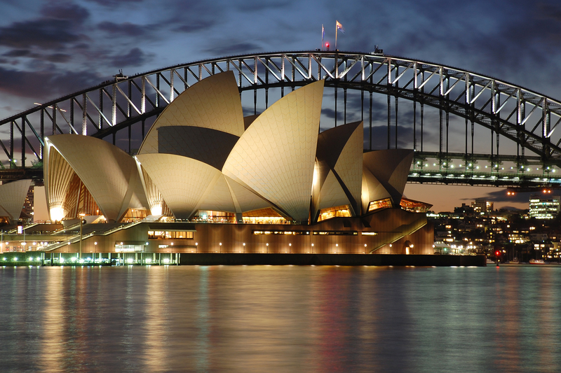

Please wait...

A World Famous Icon of Australia
The Sydney Opera House is one of the most famous landmarks in the world, located on Sydney Harbour, Australia. It was designed by Danish architect Jørn Utzon and officially opened in 1973. Its unique sail-shaped architecture makes it a symbol of creativity and innovation. It is an important center for music, theatre, opera, and dance performances. Recognized as a UNESCO World Heritage Site in 2007, the Sydney Opera House attracts millions of visitors and represents Australia’s culture, history, and architectural excellence.
The history of the Sydney Opera House began in the 1950s when the Australian government planned to build a world-class performing arts center. Danish architect Jørn Utzon won the international design competition in 1956, and construction started in 1959 at Bennelong Point, Sydney. After many challenges, the building was completed and officially opened on 20 October 1973 by Queen Elizabeth II. In 2007, it became a UNESCO World Heritage Site and today it is a global symbol of creativity, architecture, and Australian culture.
The Sydney Opera House has many interesting facts that make it unique. Its roof is made of more than one million white and cream-colored ceramic tiles. The building was designed by Danish architect Jørn Utzon and took 14 years to complete. It has multiple performance halls where thousands of shows are held every year. In 2007, it was named a UNESCO World Heritage Site. The Opera House attracts millions of visitors annually and is one of the most photographed buildings in the world.
The Sydney Opera House is famous for its unique sail-shaped architecture, beautiful location beside Sydney Harbour, and cultural importance. It is one of the most recognizable buildings in the world and represents creativity and innovation. The Opera House hosts thousands of music, theatre, and dance performances every year, attracting millions of visitors. Its outstanding design and global recognition made it a UNESCO World Heritage Site in 2007.
The main purpose of the Sydney Opera House is to provide a world-class place for artistic and cultural performances. It is used for opera, music concerts, theatre, dance, and other creative events. The building promotes Australian culture, supports artists, and brings people together to enjoy art and entertainment. It also plays an important role in tourism by attracting millions of visitors from around the world.
The Sydney Opera House is famous for its unique and modern architectural design. It was designed by Danish architect Jørn Utzon and features large white sail-shaped shells that cover the roof. These curved structures are made with thousands of ceramic tiles and create a beautiful appearance inspired by sails and nature. The building combines art, engineering, and creativity, making it one of the greatest architectural achievements of the 20th century.
Explore the beauty, history, and architecture of one of the world's most amazing monuments.
| Home | 🎭 Opera | 🏜️ Pyramid | 🏟️ Colosseum | |
| 🗼 Eiffel Tower | 🤍 Taj Mahal | 🧱 Great Wall | 🗽 Statue of Liberty | |
| ⛰️ Mount Everest | ✝️ Christ the Redeemer | 🏙️ Burj Khalifa | 📞Contact us | gallery |